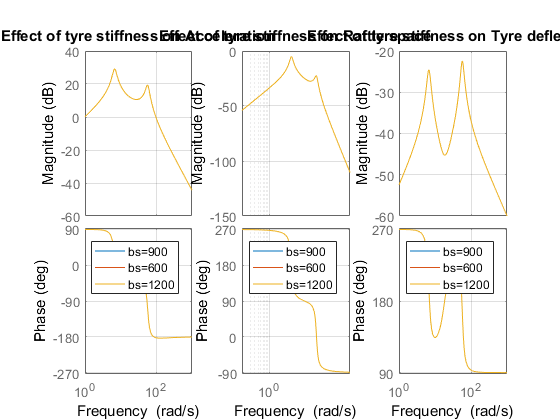

Contents
Writing Quater car model equations and finding transfern functions
clear all
Ms=300; Mu=50;
ks=15000;
kt=150000;
bs =600;
s = tf('s');
A = [0,1,0,-1;
-ks/Ms,-bs/Ms,0,bs/Ms;
0,0,0,1;
ks/Mu,bs/Mu,-kt/Mu,-bs/Mu];
B = [0;1/Ms;0;-1/Ms];
l = [0;0;-1;0];
L_X = inv(s*eye(4)-A)*l;
tf_a = s*L_X(2);
tf_r = L_X(1);
tf_t = L_X(3);
tf_a_2 = s*L_X(2);
tf_r_2 = L_X(1);
tf_t_2 = L_X(3);
tf_a_3 = s*L_X(2);
tf_r_3 = L_X(1);
tf_t_3 = L_X(3);
Finding natural frequencies
M = [Ms 0; 0 Mu];
K = [ks -ks;-ks ks+kt];
P = [0 -1];
syms omega
eqn = det(M*omega^2-K) == 0;
omega_n = double(solve(eqn));
omega_n(3) = [];
omega_n(3) = [];
Bode plot part 2b
w1_range = omega_n(1)/20:omega_n(2)*20;
figure(1);
bode(tf_a, tf_r, tf_t, w1_range);
[Gm(1),Pm(1),Wcg(1),Wcp(1)] = margin(tf_a);
[Gm(2),Pm(2),Wcg(2),Wcp(2)] = margin(tf_r);
[Gm(3),Pm(3),Wcg(3),Wcp(3)] = margin(tf_t);
legend('Acceleration tf','Rattle space tf','Tyre deflection tf');
Warning: The closed-loop system is unstable.
bode plot part 2c,d,e
figure(1);
subplot(1,3,1);
bode(tf_a, tf_a_2, tf_a_3);grid on;
title('Effect of tyre stiffness on Acceleration');
legend('bs=900','bs=600','bs=1200');
[Gm(1,1),Pm(1,1),Wcg(1,1),Wcp(1,1)] = margin(tf_a);
[Gm(1,2),Pm(1,2),Wcg(1,2),Wcp(1,2)] = margin(tf_a_2);
[Gm(1,3),Pm(1,3),Wcg(1,3),Wcp(1,3)] = margin(tf_a_3);
subplot(1,3,2);
bode(tf_r, tf_r_2, tf_r_3);grid on;
title('Effect of tyre stiffness on Rattle space');
legend('bs=900','bs=600','bs=1200');
[Gm(2,1),Pm(2,1),Wcg(2,1),Wcp(2,1)] = margin(tf_r);
[Gm(2,2),Pm(2,2),Wcg(2,2),Wcp(2,2)] = margin(tf_r_2);
[Gm(2,3),Pm(2,3),Wcg(2,3),Wcp(2,3)] = margin(tf_r_3);
subplot(1,3,3);
bode(tf_t, tf_t_2, tf_t_3);grid on;
title('Effect of tyre stiffness on Tyre deflection');
legend('bs=900','bs=600','bs=1200');
[Gm(3,1),Pm(3,1),Wcg(3,1),Wcp(3,1)] = margin(tf_t);
[Gm(3,2),Pm(3,2),Wcg(3,2),Wcp(3,2)] = margin(tf_t_2);
[Gm(3,3),Pm(3,3),Wcg(3,3),Wcp(3,3)] = margin(tf_t_3);
Warning: The closed-loop system is unstable.
Warning: The closed-loop system is unstable.
Warning: The closed-loop system is unstable.

LQR controller derivation and tuning
rho = [20000 100 20000 100];
Q = [rho(1)+(ks/Ms)^2 bs*ks/Ms^2 0 -bs*ks/Ms^2;
bs*ks/Ms^2 rho(2)+(bs/Ms)^2 0 -(bs/Ms)^2;
0 0 rho(3) 0 ;
-bs*ks/Ms^2 -(bs/Ms)^2 0 rho(4)+(bs/Ms)^2];
N = [ -ks/Ms^2; -bs/Ms^2; 0; bs/Ms^2];
R = 1/Ms^2;
[K,S,e] = lqr(A,B,Q,R,N);
A_cl = A-B*K;
L_X_cl = inv(s*eye(4)-A_cl)*l;
tf_a_cl = s*L_X_cl(2);
tf_r_cl = L_X_cl(1);
tf_t_cl = L_X_cl(3);
figure(1);
subplot(1,3,1);
bode(tf_a, tf_a_cl);grid on;
title('Bode plot for Acceleration transfer function');
legend('open loop','closed loop');
[Gm(1,1),Pm(1,1),Wcg(1,1),Wcp(1,1)] = margin(tf_a);
[Gm(1,2),Pm(1,2),Wcg(1,2),Wcp(1,2)] = margin(tf_a_cl);
subplot(1,3,2);
bode(tf_r, tf_r_cl);grid on;
title('Bode plot for Rattle Space transfer function');
legend('open loop','closed loop');
[Gm(2,1),Pm(2,1),Wcg(2,1),Wcp(2,1)] = margin(tf_r);
[Gm(2,2),Pm(2,2),Wcg(2,2),Wcp(2,2)] = margin(tf_r_cl);
subplot(1,3,3);
bode(tf_t, tf_t_cl);grid on;
title('Bode plot for Tyre Deflection transfer function');
legend('open loop','closed loop');
[Gm(3,1),Pm(3,1),Wcg(3,1),Wcp(3,1)] = margin(tf_t);
[Gm(3,2),Pm(3,2),Wcg(3,2),Wcp(3,2)] = margin(tf_t_cl);
Warning: The closed-loop system is unstable.